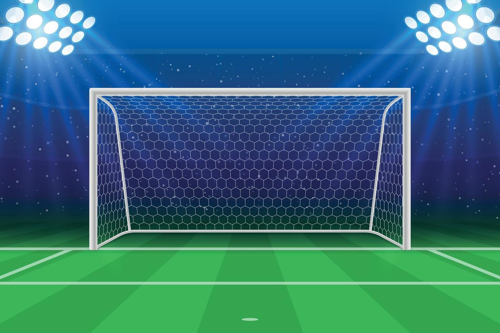
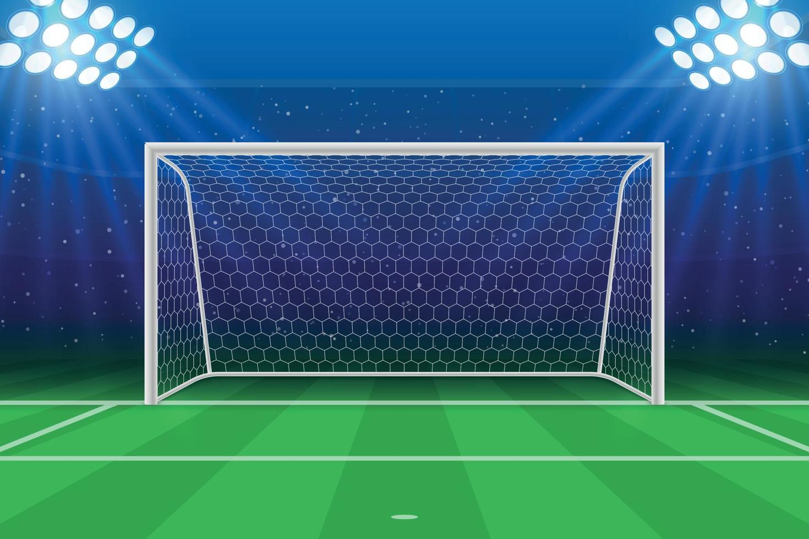

The history of football 🏛️
The beginning
The first documented form of football : known as cuju, originated in China during the Han dynasty (206 BC to 220 AD). However, the modern version of football, or association football, emerged in England in the mid-19th century with the formation of the Football Association in 1863 and the codification of its rules
Parallel versions : of ball-kicking games existed in other parts of the world: Kemari in Japan (as early as the 7th century AD), a non-competitive game emphasizing skill and elegance. Episkyros in ancient Greece, and later Harpastum in ancient Rome, involved more physical contact and may have influenced European medieval games. Indigenous cultures in the Americas, such as the Maya and Aztec civilizations, also played ball games, although many of these had religious or ritual significance and were not direct predecessors to modern football.
The start of modern football
- First official matches : Clubs began playing under the FA rules. The first official international match was held in 1872 between England and Scotland.
- The FA Cup : In 1871, the FA Cup was established — the oldest national football competition in the world.
- FIFA founded (1904) : The Fédération Internationale de Football Association (FIFA) was created to manage international competition.
Modern football : also known as association football or soccer, began to take shape in the mid-19th century in England. More specifically, the formation of the Football Association (FA) in 1863 is considered a key moment in standardizing the rules and laying the foundation for the modern game.
The booming era (Mid to Late 20th Century)
- Global Spread : Footballs popularity exploded globally, especially in Europe, South America, Africa, and Asia. The World Cup grew into the most-watched sporting event in the world.
- Professionalism and Commercialization : Football became highly professional with full-time players, sponsorships, television rights, and growing fanbases.
- Major Club Competitions : European club competitions like the European Cup (now UEFA Champions League) started in 1955, showcasing the best club teams internationally.
- Cultural Impact : Football became a powerful cultural and social force, often reflecting and influencing politics, identity, and social movements worldwide.
The rise of football : The mid to late 20th century transformed football from a mostly European pastime into a truly global phenomenon. It became more professional, tactical, and commercially savvy. Legendary players and iconic tournaments captured the imagination of millions, setting the stage for the modern, globally beloved sport it is today. The birth of many iconic football legends such as pele, maradona and the establishment of many giant powerhouse clubs of today such as Real madrid, AC milan and more were born during this era.
 
